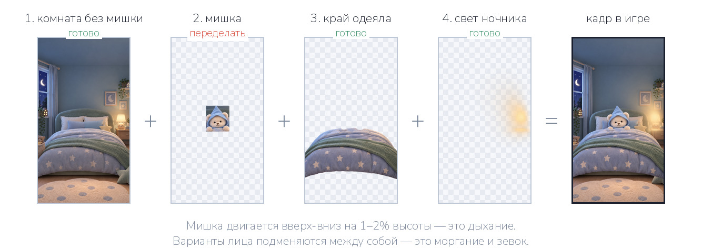
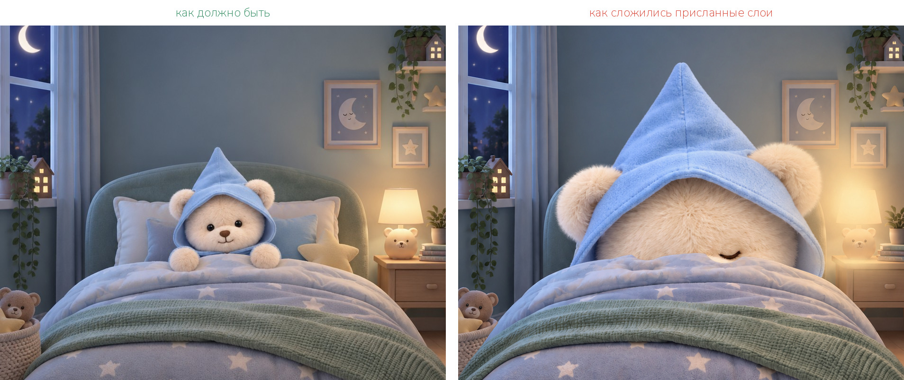
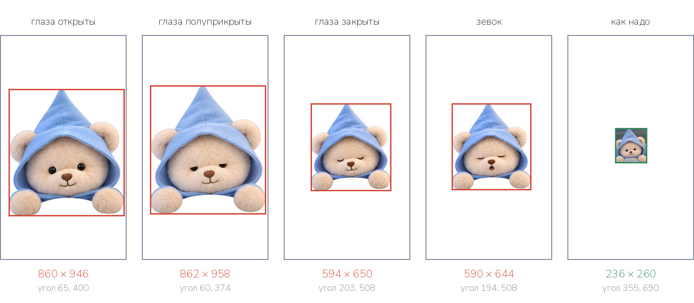
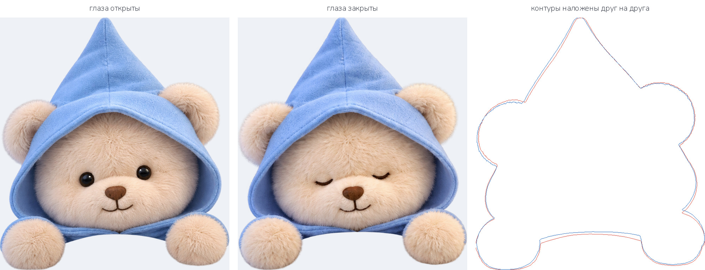
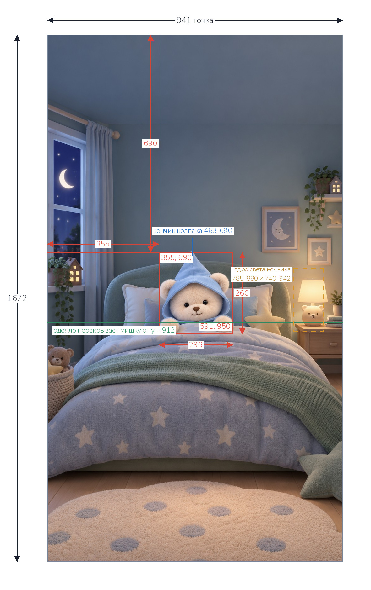
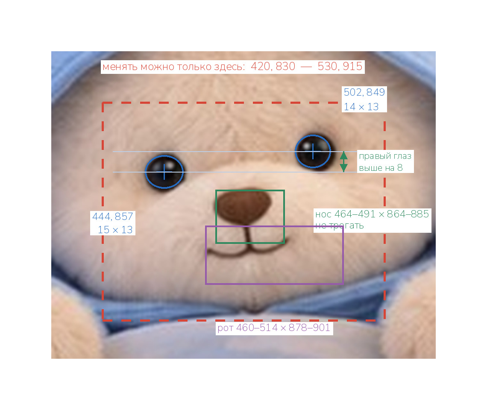

Мишка в кровати должен дышать, моргать и зевать. Для этого плоская картинка
спальни разбирается на слои. Первая партия пришла — три слоя приняты,
четыре надо переделать. Ниже: что уже готово, что не так, все обмеры
и два задания.
Приёмка первой партии
✓Комната без мишки
941 × 1672, мишка убран, подушки дорисованы чисто, остальная картинка
совпадает с исходником точка в точку. Принято, переделывать не надо.
✓Передний край одеяла
941 × 1672, прозрачность настоящая, вырезано прямо из исходника,
верхняя кромка на y = 912, на всю ширину кровати. Принято.
✓Свет ночника
941 × 1672, фон прозрачный, ядро свечения 785–880 по ширине и
740–942 по высоте — ровно на лампе. Принято.
✕Четыре варианта мишки
Нарисованы верно, но фигура в 2,4 раза крупнее нужной, и между собой
у них два разных масштаба. И главное — это четыре отдельных рисунка,
а не один мишка с перерисованным лицом. Переделать.
Как слои складываются

Слои кладутся друг на друга снизу вверх. Комната, край одеяла и свет
ночника уже готовы — в переделку идёт только второй слой, мишка.
Что не так с мишкой
1. Размер и место

Слева — как должно быть. Справа — что получается, если сложить
присланные слои как есть: мишка занимает полкровати.

Каждый белый прямоугольник — холст 941 × 1672. Красная рамка — где на нём
оказалась фигура. Справа зелёным — где она должна быть.
Файл
Размер фигуры
Левый верхний угол
глаза открыты
860 × 946
65, 400
глаза полуприкрыты
862 × 958
60, 374
глаза закрыты
594 × 650
203, 508
зевок
590 × 644
194, 508
как надо
236 × 260
355, 690
2. Варианты нарисованы заново, а не отредактированы

Два варианта подогнаны под один размер, и их контуры наложены друг на
друга. Красная и синяя линии должны были слиться в одну, а они расходятся:
край капюшона, уши и лапы стоят по-разному. При переключении между
вариантами мишка будет дёргаться всей фигурой, а не просто моргать.
Все обмеры разом
Что
Где
Холст каждого слоя
941 × 1672
Прямоугольник фигуры мишки
355, 690 — 591, 950 (236 × 260)
Кончик колпака
463, 690
Левый глаз, центр
444, 857 · размер 15 × 13
Правый глаз, центр
502, 849 · размер 14 × 13
Нос
464–491 по ширине, 864–885 по высоте
Рот
460–514 по ширине, 878–901 по высоте
Зона лица — только её можно менять
420, 830 — 530, 915
Одеяло перекрывает мишку от
y = 912
Ядро света ночника
785–880 по ширине, 740–942 по высоте
Все числа — точки на исходном изображении 941 × 1672, отсчёт от левого
верхнего угла. На следующих двух страницах то же самое нарисовано.
Обмеры: где стоит мишка

Все числа — точки на холсте 941 × 1672, отсчёт от левого верхнего угла.
Обмеры: мордочка

Красный пунктир — единственное место, где вариантам разрешено отличаться
друг от друга.
Голова у мишки слегка наклонена, поэтому правый глаз выше левого на восемь
точек. Этот наклон нужно сохранить: если поставить глаза на одну высоту,
морда «выпрямится» и станет чужой.
Задание
Два шага, строго по очереди. Второй делается по файлу из первого — иначе
снова получатся четыре разных мишки.
Шаг 1 Мишка на своём месте bear.png
Из исходной картинки спальни (941 × 1672) вырезать плюшевого мишку и
положить на полностью прозрачный фон. В фигуру входит колпак с капюшоном,
голова, оба уха и обе лапы, лежащие на одеяле. Глаза открытые, как на
исходнике.
Размер и место
Холст файла ровно 941 × 1672 точки. Фигура занимает прямоугольник
от точки 355, 690 до точки 591, 950 — 236 точек в ширину и 260 в высоту.
Кончик колпака приходится на точку 463, 690. Всё поле вне фигуры
полностью прозрачное.
Край шерсти
Вырезать мягко, по волоску, с полупрозрачными кончиками ворса. Никакой
белой или серой каймы по контуру.
Тень
Тень, которую мишка отбрасывает на подушку, в слой не включать — она
остаётся на фоне.
Формат
PNG-24 с альфа-каналом, без сжатия с потерями. Имя файла bear.png.
Нельзя рисовать мишку заново. Это должен быть тот же самый мишка
с исходной картинки: та же форма капюшона, те же места ушей и лап,
тот же свет и те же тени на шерсти. Новая генерация не подойдёт — она
не сядет на подушку, с которой её убрали.
Если инструмент не умеет ставить фигуру в заданный прямоугольник —
отдавайте мишку на прозрачном фоне как есть, размер и место подгонятся
на нашей стороне. Но этот файл обязательно сохранить: все три файла
шага 2 делаются из него.
Шаг 2 Три варианта лица
Три копии файла bear.png, в которых меняется только мордочка:
bear_eyes_half.png
глаза полуприкрыты, сонный взгляд, рот закрыт
bear_eyes_closed.png
глаза закрыты дугами, рот закрыт, спокойная мордочка
bear_yawn.png
глаза закрыты, рот открыт в зевке
Как именно это делается
Открыть bear.png и перерисовать пиксели только внутри
прямоугольника от точки 420, 830 до точки 530, 915. Это зона глаз,
носа и рта.
Что должно остаться нетронутым
Всё, что за пределами этого прямоугольника, — точка в точку как в
bear.png: колпак, капюшон, уши, лапы, складки ткани, цвет
шерсти, свет, тени, край ворса и альфа-канал. Размер холста, положение
фигуры, её масштаб и поворот не меняются.
Нос не трогать
Он остаётся на месте: 464–491 по ширине, 864–885 по высоте.
Ориентиры по глазам и рту
Левый глаз — центр 444, 857, размер около 15 × 13. Правый глаз — центр
502, 849, размер около 14 × 13. Рот — 460–514 по ширине, 878–901 по
высоте. Правый глаз выше левого на восемь точек, этот наклон сохранить.
Формат
PNG-24 с альфа-каналом, размер холста как у bear.png.
Нельзя генерировать мишку заново для каждого варианта. Если
фигура рисуется с нуля, у неё сдвигаются капюшон, уши и лапы — и при
переключении мишка дёргается целиком вместо того, чтобы моргнуть.
В первой партии получилось именно так: см. страницу с наложенными
контурами.